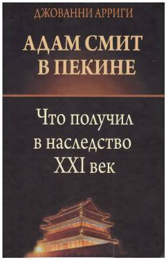

АСJahon iqtisodiy markazining G'arbdan Sharqqa ko'chishi va Xitoyning yuksalishi haqidagi tahliliy asar.
Kitobda XXI asr boshidagi global siyosiy va iqtisodiy o'zgarishlar, xususan, AQShning gegemonlik inqirozi va Xitoyning iqtisodiy yuksalishi tahlil qilinadi. Muallif Adam Smit nazariyasiga tayangan holda jahon iqtisodiy markazining Shimoliy Amerikadan Sharqiy Osiyoga ko'chish sabablarini ilmiy nuqtai nazardan yoritib beradi.